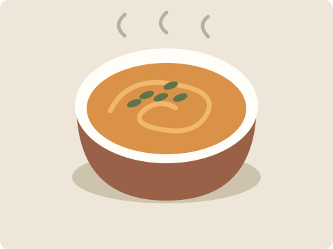
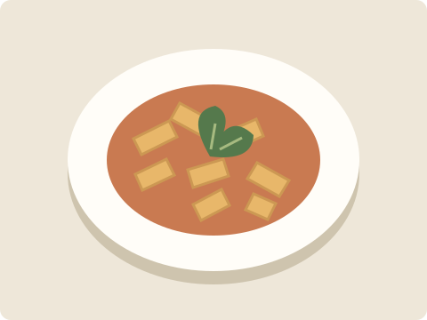
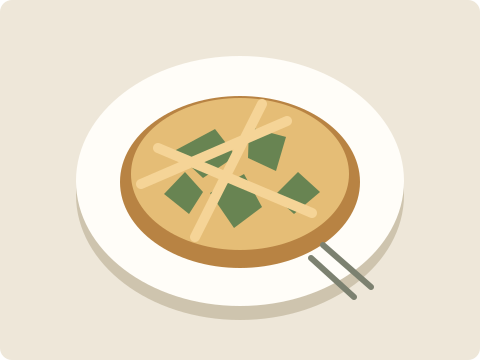
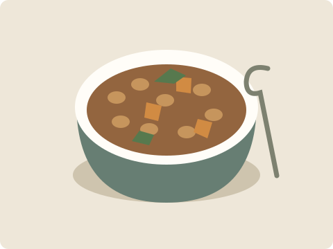
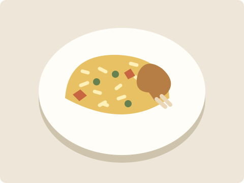

Nuestra comunidad de ejemplo
Distintas mesas.
Las mismas ganas.
Galería adaptable de proyectos gastronómicos ficticios. Las ilustraciones pertenecen a esta práctica.

La Huerta
Verduras y cocina de estación

El Almacén
Pastas para compartir

La Esquina
Una pausa al mediodía

El Taller
Comidas de olla

Mesa Larga
Almuerzos entre amigos

Buen Día
Una mesa de todos los días